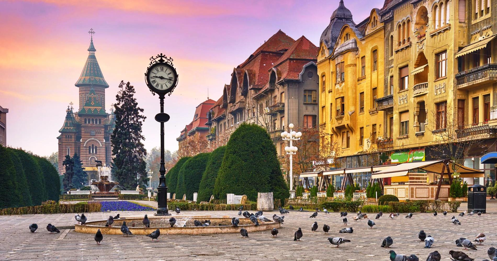
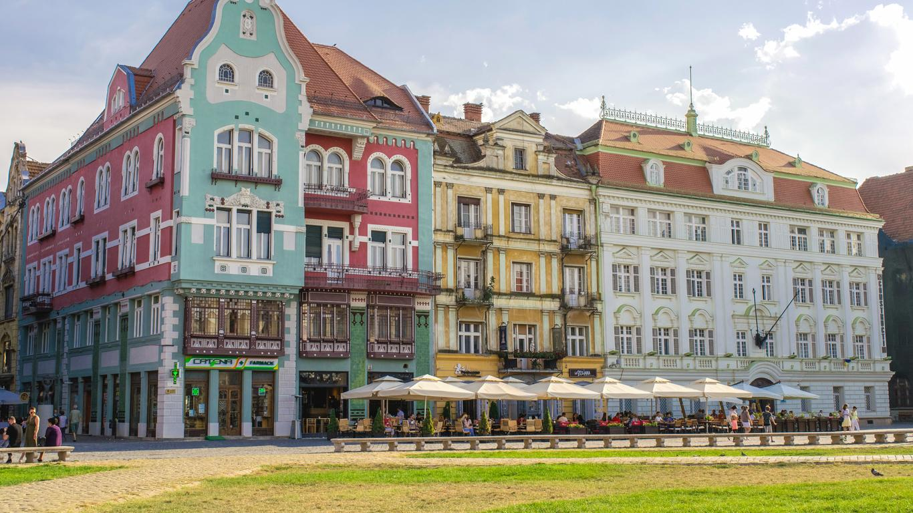
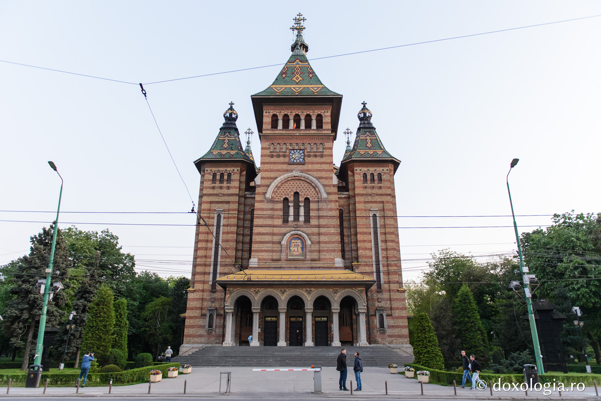
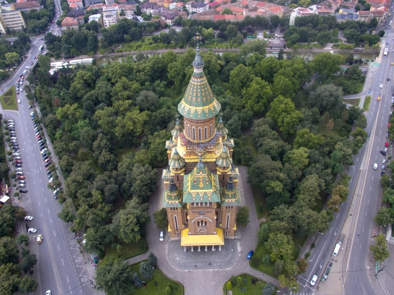
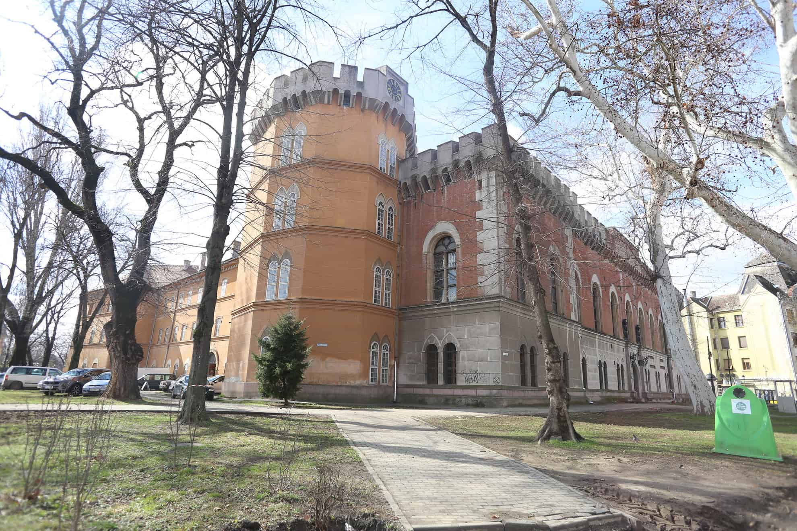
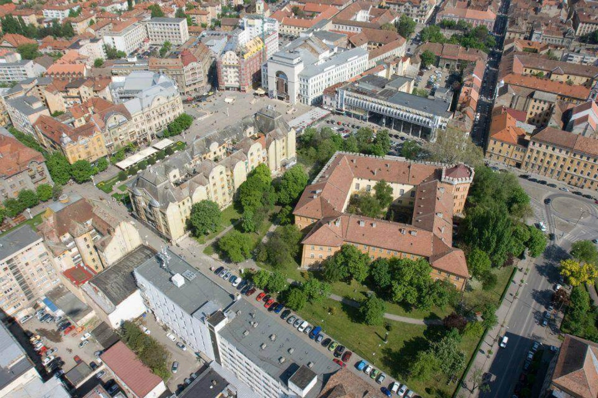

TIMIȘOARA
În anul 2011, Timișoara avea 319.279 de locuitori și era al treilea oraș ca populație din România, fiind printre puținele orașe care au înregistrat o creștere de la cifra înregistrată la recensământul din 2002.
Clădiri emblematice pentru oraș sunt Catedrala Mitropolitană Ortodoxă și Opera Națională Română din Piața Victoriei respectiv Domul Romano-Catolic, Vicariatul Sârbesc și Casa Brück din Piața Unirii. Printre obiectivele turistice se numără Castelul Huniade, Bastionul Theresia, Muzeul de Artă și Muzeul Satului Bănățean.


CATEDRALA MITROPOLITANĂ
Catedrala Mitropolitană din Timișoara este cel mai mare edificiu religios din Timișoara, catedrală a Mitropoliei Banatului, cu hramul „Trei Ierarhi”. A fost construită între 1936 și 1941 și este un simbol al orașului. Cu înălțimea de 90,5 m în prezent este a doua biserică din România ca înălțime după Catedrala Mântuirii Neamului, viitoarea catedrală patriarhală din București.
Construcția propriu-zisă a început pe 16 martie 1936 iar în 20 decembrie s-a pus printr-o ceremonie piatra fundamentală a viitoarei Catedrale.[1] Lucrările de construcție s-au terminat în 1941.[3] Clopotele și crucile bisericii au fost sfințite în 23 august 1938. Toate finisajele, picturile interioare și exterioare s-au terminat însă abia în 1956, din cauza celui de-al doilea război mondial.


CASTELUL HUNIADE
Castelul Huniade este un monument istoric și cea mai veche clădire din Timișoara, construit între anii 1308–1315 de Carol Robert de Anjou și reconstruit după cutremurul din 1443 de către Ioan de Hunedoara. Castelul medieval a fost distrus în timpul asediului Timișoarei din 1849 și refăcut în forma actuală în 1856. Astăzi adăpostește Muzeul Banatului.
În contextul frământărilor politice din Regatul Ungariei al secolului XIV, regele Carol Robert de Anjou a decis, în urma unei vizite în 1307, să-și stabilească provizoriu, reședința la Timișoara. S-a impus astfel necesitatea edificării unui castel care să facă față necesităților regelui. Construcția a fost realizată probabil de constructori italieni și terminată cel mai probabil în 1315, pentru că, în 1316, regele era deja stabilit în noul său castel.